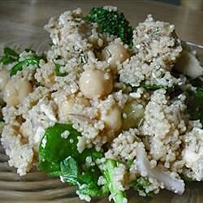

Rosemary Chicken Couscous Salad

A wonderful summer salad
Fresh herbs keep the salad light, while the chicken and feta cheese make it hearty enough to serve for a main meal. Use as a side dish by omitting the chicken and adding chopped artichoke hearts. The salad also works wonderfully with grilled salmon or chicken.
Ingredients
- 2 cups chicken broth
- 1 box couscous
- 3/4 cup olive oil
- 1/4 cup lemon juice
- 2 tablespoons white balsamic vinegar
- 2 cooked chicken breasts
- 1 cup chopped cucumber
- 1/2 cup chopped sundried tomatoes
- 1/2 cup crumbled feta
- 1/3 chopped italian parsley
- 1/2 cup chopped pitted olives
- salt and pepper to taste
Steps
- Place chicken stock in a saucepan and bring to a boil over medium-high heat. Stir in couscous. Remove pan from the heat; cover, and let stand for 5 minutes. Fluff couscous with a fork. Cool for 10 minutes.
- Meanwhile, make the dressing by combining the olive oil, lemon juice, and vinegar in the bowl of a blender or food processor; mix on low until mixture thickens. Stir in rosemary. Season to taste with salt and pepper.
- Combine the chicken, cucumber, sun-dried tomatoes, and olives in a large bowl. Stir in the couscous, Feta cheese, and parsley. Season to taste with salt and pepper. Toss the salad with half the dressing. Taste, and add more dressing as desired, or, if making the salad in advance, add additional dressing just before serving.
from allrecipes.com